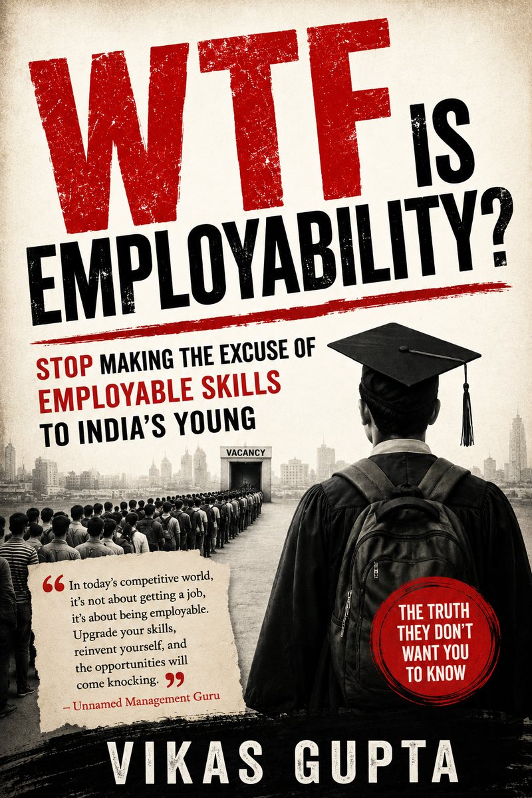
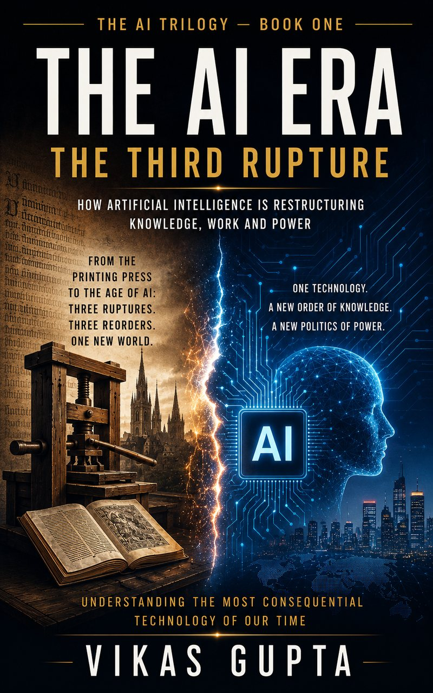
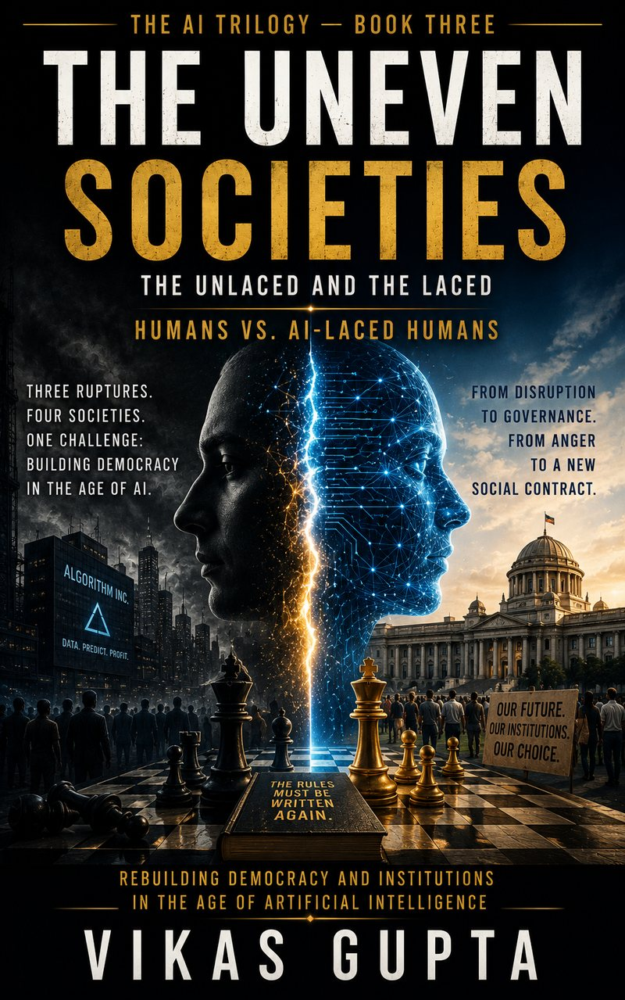
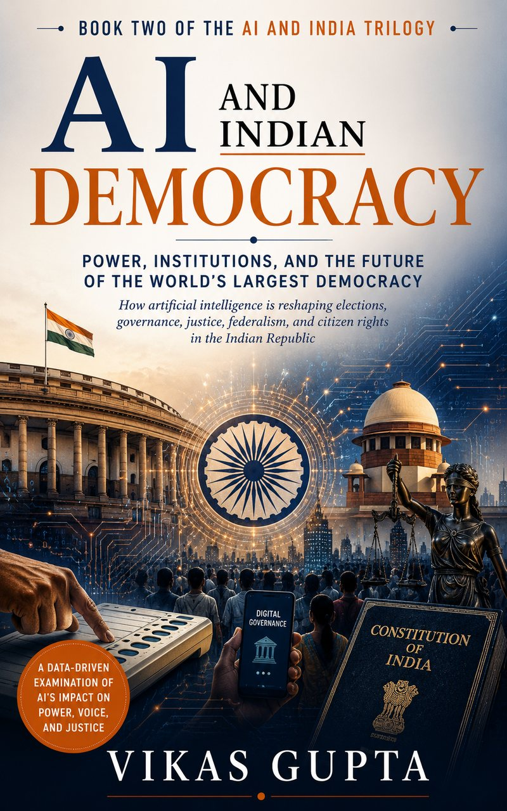
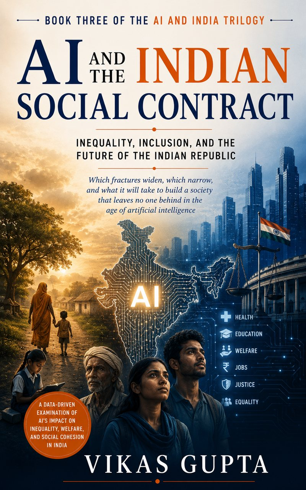

WORKS
7 Titles

Standalone Title
WTF Is Employability?
The Biggest Lie Told to Young India
A candid examination of the employability myth — why the skills gap narrative fails young Indians and what the system refuses to admit.
The AI Trilogy

Book OneThe AI Era: The Third Rupture
How Artificial Intelligence Is Restructuring Knowledge, Work and Power
 Book Two
Book Two
The Sorted Billion of India
AI in Conflict with a Generation

Book ThreeThe Uneven Societies
The Unlaced and the Laced — Humans vs. AI-Laced Humans
The AI and India Trilogy
 Book One
Book One
AI and the Indian Economy
Opportunity, Disruption, and the Future of Work & Growth

Book TwoAI and Indian Democracy
Power, Institutions, and the Future of the World's Largest Democracy

Book ThreeAI and the Indian Social Contract
Inequality, Inclusion, and the Future of the Indian Republic